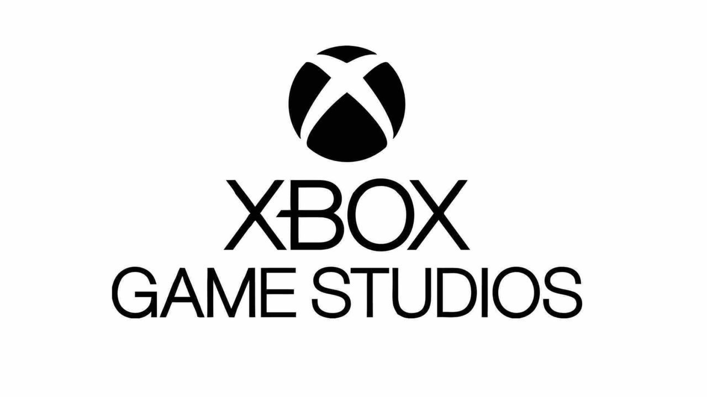

Xbox Game Studios
Fue fundada por Paul Allen y Bill Gates el 4 de abril de 1975 para desarrollar y comercializar intérpretes de BASIC para el Altair 8800, un microordenador diseñado en 1974 y basado en el procesador Intel 8080. A mediados de 1980 llegó a dominar el mercado de los sistemas operativos para computadores personales con MS-DOS, éxito que continuó con Microsoft Windows. La oferta pública inicial de acciones de 1986 y la subsecuente subida del precio de la acción, creó 3 billonarios y un estimado de 12.000 millonarios entre los empleados de Microsoft. Desde la década de 1990 se ha diversificado cada vez más desde el mercado de sistemas operativos y ha realizado una serie de adquisiciones corporativas, siendo la más grande la compra de LinkedIn por 26.200 millones de dólares en diciembre de 2016,8 seguido de la compra de Skype Technologies por 8500 millones de dólares en mayo de 2011.9
Microsoft es un operador dominante en el mercado de los sistemas operativos para los computadores IBM Compatible y el mercado de las suites ofimáticas, aunque ha perdido la mayoría del mercado de los sistemas operativos por la llegada de Android en 2008.10 La compañía también produce un amplio rango de otros productos de software para computadores de escritorio y servidores, incluyendo búsquedas en internet (con Bing), el mercado de los servicios digitales (mediante MSN), realidad mixta (HoloLens), computación en la nube (Azure) y desarrollo de software (Visual Studio).
La propia compañía desarrolla y publica sus propios videojuegos tanto para las videoconsolas Xbox como para Windows, con la ayuda de su división Xbox Game Studios. Algunos juegos destacados producidos por Microsoft son Age of Empires, Banjo-Kazooie, Battletoads, Crackdown, Fable, Forza Motorsport, Gears of War, Halo, Killer Instinct, Minecraft, Ori, Perfect Dark, Zoo Tycoon, State of Decay, Solitario Microsoft y Microsoft Flight Simulator (simulador de vuelo) entre otros títulos.
"HISTORIA"
Siguiendo el lanzamiento del Altair 8800, Bill Gates, como director gerente de Microsoft, llamó a los creadores del nuevo microordenador Micro Instrumentation and Telemetry Systems (Micro Instrumentación de Sistemas de Telemetría) (MITS), ofreciendo una implementación del lenguaje de programación BASIC para el sistema. Tras la demostración, MITS accedió a distribuir Altair BASIC.17 Gates dejó la universidad Harvard, trasladándose a Albuquerque, Nuevo México, donde el MITS estaba establecido, y fundó, junto a Paul Allen, Microsoft en 1975. La primera oficina internacional de la compañía se abrió el 1 de noviembre de 1978 en Japón, bajo el nombre de "ASCII Microsoft" (actualmente conocida como Microsoft Japón).18 El 1 de enero de 1979, Microsoft se trasladó a Bellevue, en Washington. El 11 de junio de 1980, Steve Ballmer se une a la compañía, quien sustituiría después a Bill Gates como segundo CEO de Microsoft.
POWER YOU DREAMS
Estos son los estudios de Xbox Game Studios
343 Industries
(se encargan de la saga Halo) —Redmond, Washington, Estados Unidos
The Coalition
(responsables de la saga Gears of War) —Vancouver, Canadá
Mojang Studios
(Minecraft) —Estocolmo, Suecia
Compulsion Games
(We Happy Few) —Montreal, Canadá
InXile Entertainment
(Wasteland 3, Bard's Tale) —Newport Beach, California, Estados Unidos
Obsidian Entertainment
(Fallout: New Vegas, The Outer Worlds, Grounded) —Irvine, California, Estados Unidos
id Software
(DOOM, RAGE) —Mesquite, Texas, Estados Unidos/ Fráncfort, Alemania
Tango GameWorks
(The Evil Within, Ghostwire: Tokyo) —Odaiba, Tokio, Japón